FOUNDATION FOR INTELLIGENT PHYSICAL AGENTS
FIPA Interaction Protocol Library Specification
|
Document title |
FIPA Interaction Protocol Library Specification |
||
|
Document number |
DC00025F |
Document source |
FIPA TC C |
|
Document status |
Deprecated |
Date of this status |
2003/02/10 |
|
Supersedes |
FIPA00003 |
||
|
Contact |
fab@fipa.org |
||
|
Change history |
See Informative Annex A — ChangeLog |
||
© 2000 Foundation for Intelligent Physical Agents - http://www.fipa.org/
Geneva, Switzerland
|
Notice |
|
Use of the technologies described in this specification may infringe patents, copyrights or other intellectual property rights of FIPA Members and non-members. Nothing in this specification should be construed as granting permission to use any of the technologies described. Anyone planning to make use of technology covered by the intellectual property rights of others should first obtain permission from the holder(s) of the rights. FIPA strongly encourages anyone implementing any part of this specification to determine first whether part(s) sought to be implemented are covered by the intellectual property of others, and, if so, to obtain appropriate licenses or other permission from the holder(s) of such intellectual property prior to implementation. This specification is subject to change without notice. Neither FIPA nor any of its Members accept any responsibility whatsoever for damages or liability, direct or consequential, which may result from the use of this specification. |
Foreword
The Foundation for Intelligent Physical Agents (FIPA) is an international organization that is dedicated to promoting the industry of intelligent agents by openly developing specifications supporting interoperability among agents and agent-based applications. This occurs through open collaboration among its member organizations, which are companies and universities that are active in the field of agents. FIPA makes the results of its activities available to all interested parties and intends to contribute its results to the appropriate formal standards bodies.
The members of FIPA are individually and collectively committed to open competition in the development of agent-based applications, services and equipment. Membership in FIPA is open to any corporation and individual firm, partnership, governmental body or international organization without restriction. In particular, members are not bound to implement or use specific agent-based standards, recommendations and FIPA specifications by virtue of their participation in FIPA.
The FIPA specifications are developed through direct involvement of the FIPA membership. The status of a specification can be either Preliminary, Experimental, Standard, Deprecated or Obsolete. More detail about the process of specification may be found in the FIPA Procedures for Technical Work. A complete overview of the FIPA specifications and their current status may be found in the FIPA List of Specifications. A list of terms and abbreviations used in the FIPA specifications may be found in the FIPA Glossary.
FIPA is a non-profit association registered in Geneva, Switzerland. As of January 2000, the 56 members of FIPA represented 17 countries worldwide. Further information about FIPA as an organization, membership information, FIPA specifications and upcoming meetings may be found at http://www.fipa.org/.
Contents
2.2 Status of a FIPA-Compliant Interaction Protocol
2.3 FIPA Interaction Protocol Library Maintenance.
3 AUML Sequence Diagrams for Interaction Protocol Specification
3.2 Extending UML by Protocol Diagrams
3.2.8 Complex Nested Protocols
3.2.9 Threads of Interaction and Messages Inside and Outside Nested Protocols
3.2.10 Parameterised Protocols
· Specifications for structuring the FIPA Interaction Protocol Library (IPL) including a status of a FIPA Interaction Protocols (IPs), maintenance of the library and inclusion criteria for new IPs.
· A description of how to understand and express IPs using AUML (Agent Unified Modeling Language).
· The FIPA IP registry list.
This specification is primarily concerned with defining the structure of the FIPA IPL and the requirements for an IP to be included in the library.
This specification focuses on the organization, structure and status of the FIPA IPL and discusses the main requirements that an IP must satisfy in order to be FIPA-compliant. The objectives of standardising and defining a library of FIPA compliant IPs are:
· To provide tested patterns of agent interaction that may be of use in various aspects of agent-based systems,
· To facilitate the reuse of standard agent IPs, and,
· To express IPs in a standard agent unified modelling language (AUML).
In the following, we present the basic principles of the FIPA IPL which help to guarantee that the IPL is stable, that there are public rules for the inclusion and maintenance of the IPL, and that developers seeking a public IPs can use the IPL.
Ongoing conversations between agents often fall into typical patterns. In such cases, certain message sequences are expected, and, at any point in the conversation, other messages are expected to follow. These typical patterns of message exchange are called interaction protocols. A designer of agent systems has the choice to make the agents sufficiently aware of the meanings of the messages and the goals, beliefs and other mental attitudes the agent possesses, and that the agent’s planning process causes such IPs to arise spontaneously from the agents’ choices. This, however, places a heavy burden of capability and complexity on the agent implementation, though it is not an uncommon choice in the agent community at large. An alternative, and very pragmatic, view is to pre-specify the IPs, so that a simpler agent implementation can nevertheless engage in meaningful conversation with other agents, simply by carefully following the known IP.
This section of the specification details a number of such IPs, in order to facilitate the effective inter-operation of simple and complex agents. No claim is made that this is an exhaustive list of useful IPs, nor that they are necessary for any given application. The IPs are given pre-defined names and the requirement for adhering to the specification is:
A FIPA ACL-compliant agent need not implement any of the standard IPs, nor is it restricted from using other IP names. However, if one of the standard IP names is used, the agent must behave consistently with the IP specification given here.
These IPs are not intended to cover every desirable interaction type. Individual IPs do not address a number of common real-world issues in agent interaction, such as exception handling, messages arriving out of sequence, dropped messages, timeouts, cancellation, etc. Rather, the IPs defined in this specification set should be viewed as interaction patterns, to be elaborated according to the context of the individual application. This strategy means that adhering to the stated IPs does not necessarily ensure interoperability; further agreement between agents about the issues above is required to ensure interoperability in all cases.
Note that, by their nature, agents can engage in multiple dialogues, perhaps with different agents, simultaneously. The term conversation is used to denote any particular instance of such a dialogue. Thus, the agent may be concurrently engaged in multiple conversations, with different agents, within different IPs. The remarks in this section, which refer to the receipt of messages under the control of a given IP, refer only to a particular conversation.
The definition of an IP belonging to the FIPA IPL is normative, that is, if a given agent advertises that it employs an IP in the FIPA Content Language Library (see [FIPA00007]), then it must implement the IP as it is defined in the FIPA IPL. However, FIPA-compliant agents are not required to implement any of the FIPA IPL IPs themselves, except those required for Agent Management (see [FIPA00023]).
By collecting IP definitions in a single, publicly accessible registry, the FIPA IPL facilitates the use of standardized IPs by agents developed in different contexts. It also provides a greater incentive to developers to make their IPs generally applicable.
FIPA is responsible for maintaining a consistent list of IP names and for making them publicly available. In addition to the list of encoding schemes, each IP in the FIPA IPL may specify additional information, such as stability information, versioning, contact information, different support levels, etc.
The most effective way of maintaining the FIPA IPL is through the use of the IPs themselves by different agent developers. This is the most direct way of discovering possible bugs, errors, inconsistencies, weaknesses, possible improvements, as well as capabilities, strengths, efficiency, etc.
In order to collect feedback on the IPs in the library and to promote further research, FIPA encourages coordination among designers, agent developers and FIPA members.
To populate the FIPA IPL, setting fundamental guidelines for the selection of specific IPs is necessary. The minimal criteria that must be satisfied for an IP to be FIPA compliant are:
· A clear and accurate representation of the IP is provided using AUML protocol diagram,
· Substantial and clear documentation must be provided, and,
· The usefulness of a new IP should be made clear.
FIPA does not enforce the use of any particular IP.
During the 1970s, structured programming was the dominant approach to software development. Along with it, software engineering technologies were developed in order to ease and formalize the system development lifecycle: from planning, through analysis and design and finally to system construction, transition, and maintenance. In the 1980s, object-oriented languages experienced a rise in popularity, bringing with it new concepts such as data encapsulation, inheritance, messaging, and polymorphism. By the end of the 1980s and beginning of the 1990s, a jungle of modelling approaches grew to support the object-oriented marketplace. To make sense of and unify these various approaches, an Analysis and Design Task Force was established on 29 June 1995 within the Object Management Group (OMG). And by November 1997, a de jure standard was adopted by the OMG members called the Unified Modelling Language (UML - see [OMGuml]).
UML unifies and formalizes the methods of many object-oriented approaches, including analysis and design [Booch94 and Booch95], modelling [Rumbaugh91] and software engineering [Jacobson94]. It supports the following kinds of models:
· Static models
Such as class and package diagrams describe the static semantics of data and messages. Within system development, class diagrams are used in two different ways, for two different purposes. First, they can model a problem domain conceptually and since they are conceptual in nature, they can be presented to the customers. Second, class diagrams can model the implementation of classes which guides developers. At a general level, the term class refers to the encapsulated unit and at the conceptual level, models types and their associations; the implementation level models implementation classes. While both can be more generally thought of as classes, their usage as concepts and implementation notions is important both in purpose and semantics. Package diagrams group classes in conceptual packages for presentation and consideration. (Physical aggregations of classes are called components that are in the implementation model family, mentioned below.)
· Dynamic models
These include interaction diagrams (that is, sequence and collaboration diagrams), state charts and activity diagrams.
· Use cases
The specification of actions that a system or class can perform by interacting with outside actors. They are commonly used to describe how a customer communicates with a software product.
· Implementation models
These describe the component distribution on different platforms, such as component models and deployment diagrams
· Object Constraint Language (OCL)
This is a simple formal language to express more semantics within an UML specification. It can be used to define constraints on the model, invariant, pre- and post-conditions of operations and navigation paths within an object net.
For modelling agents and agent-based systems, UML is insufficient. Compared to objects, agents are active because they act for reasons that emerge from themselves. The activity of agents is based on their internal states, which include goals and conditions that guide the execution of defined tasks. While objects need control from outside to execute their methods, agents know the conditions and intended effects of their actions and hence take responsibility for their needs. Furthermore, agents do not only act solely but together with other agents. Multi-agent systems can often resemble a social community of interdependent members that act individually.
However, no sufficient specification formalism exists yet for agent-based system development. To employ agent-based programming, a specification technique must support the whole software engineering process—from planning, through analysis and design, and finally to system construction, transition, and maintenance.
A proposal for a full life-cycle specification of agent-based system development is beyond the scope of this specification. Here, we suggest a subset of an agent-based extension to the standard UML, called AUML, for the specification of agent interaction protocols (AIPs).
It has to be distinguished between generic (or parameterised) protocols (and their instantiations) and domain-specific protocols.
In the following, we provide sequence diagrams for AUML [Odell2000], an extension to UML. We refer to these sequence diagrams as protocol diagrams (PDs) which show well-defined interactions among agents. Note that we do not define formal semantics for the communicative acts for AUML, but instead use the UML meta-model.
Adapted from [OMGuml], section 3.59.
A PD represents an interaction, which is a set of messages exchanged among different agent roles within a collaboration to effect a desired behaviour of other AgentRoles or agent instances.
A PD has two dimensions: the vertical dimension represents time, the horizontal dimension represents different AgentRoles. Normally the time proceeds down the page and usually only time sequences are important, but in real-time applications the time axis could be an actual metric. There is no significance to the horizontal ordering of the AgentRoles.
The axes can be interchanged, so that time proceeds horizontally to the right and different AgentRoles are shown as horizontal lines.
Various labels (such as timing marks, generated goals depending on the received message, etc.) can be shown either in the margin or near the lifelines or messages that they label.
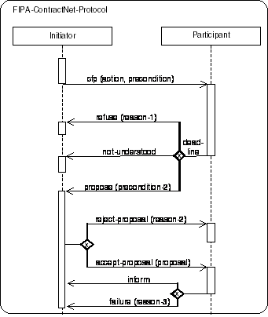
The mapping is analogous defined as for sequence diagrams (see [OMGuml]).
A PD maps like a sequence diagram into an Interaction and an underlying Collaboration. An Interaction specifies a sequence of communications; it contains a collection of partially ordered Messages, each specifying a communication between a sender role and a receiver role. Collections of agent roles that conform to the ClassifierRoles in the Collaboration owning the Interaction, communicate by dispatching Stimuli that conform to the Messages in the Interaction. An AgentRole maps into a ClassifierRole. A PD presents one collection of AgentRoles and arrows mapping to AgentRole and Stimuli that conform to the ClassifierRoles and Messages in the Interaction and its Collaboration.
In a PD, each AgentRole box with its lifeline maps into an agent role that conforms to a ClassifierRole in the Collaboration. The name fields maps into the name of the agent, the role name into the Classifier's name and the class field maps into the names of the Classifier (in this case AgentClasses being Classes) being the base Classifiers of the ClassifierRole. The splitting of lifelines has a concurrency Association defining either AND/OR parallelism or decision Association denoting threads (<<thread>>). The associations among roles are not shown on the sequence diagram since they must be obtained in the model from a complementary collaboration diagram or other means. A message arrow maps into a Stimulus connected to two AgentRoles. the sender and receiver AgentRole. The Stimulus conforms to a Message between the ClassifierRoles corresponding to the two AgentRoles' lifelines that the arrow connects. The Link is used for the communication of the Stimulus and plays the role specified by the AssociationRole connected to the Message. Unless the correct Link can be determined from a complementary collaboration diagram or other means, the Stimulus is either not attached to a Link (not a complete model), or it is attached to an arbitrary Link or to a dummy Link between the Instances conforming to the AssociationRole implied by the two ClassifierRoles due to the lack of complete information. The name of the communicative act is mapped onto the behaviour associated by the action performing, requested information, information passing, negotiation or error handling connected to the Message. Different alternatives exist for showing the arguments of the Stimulus. If references to the actual Instances being passed as arguments are shown, these are mapped onto the arguments of the Stimulus. If the argument expressions are shown instead, these are mapped onto the Arguments of the action performing, requested information, information passing, negotiation or error handling connected to the dispatching communicative act. Finally, if the types of the arguments are shown together with the name of the communicative act, these are mapped onto the parameter types of the communicative act. A timing label placed on the level of an arrow endpoint maps into the name of the corresponding Message. A constraint or guard placed on the diagrams maps into a Constraint on the entire Interaction. The cardinality label restricts the number of sending and receiving instances of agent roles accordingly to the numbers denoted at the beginning (sender) and end (receiver) of the message.
An arrow with the arrowhead pointing to an AgentRole symbol within the frame of the diagram maps into a Stimulus dispatched by a CreateAction, that is, the Stimulus conforms to a Message in the Interaction which is connected to the CreateAction. The interpretation is that the AgentRole instance (not an arbitrary agent role, nor a set of AgentRole instances) is created by dispatching the Stimulus, and the AgentRole instance conforms to the receiver role specified in the Message. After the creation of the AgentRole instance, it may immediately start interacting with other AgentRoles. This implies that the creation of the AgentRole dispatches these Stimuli. If an AgentRole instance termination symbol ("X") is the target of the of an arrow, the arrow maps into a Stimulus which will cause the receiving agent role instance to be removed. The Stimulus conforms to a Message in the Interaction with a DestroyAction attached to the Message or the agent instance terminates itself.
The order of the arrows in the diagram map onto a pair of associations between the Messages that correspond to the Stimuli the arrows maps onto. A predecessor association is established between Messages corresponding to successive arrow ends in the vertical sequence. In case of concurrent arrows preceding an arrow, the corresponding Message has a collection of predecessors. In case of exclusive-or and inclusive-or arrows preceding an arrow the corresponding message has one and at least one out of the collection of possible predecessors, respectively. Moreover, each Message has an activator (thread of interaction) association to the Message corresponding to the incoming arrow of the activation or pro-active sending of a message.
A nested protocol maps into a PD. The name compartment of a nested protocol maps into the name of the Collaboration. The guard and constraint compartment maps into a constraint on the complete Interaction.
A complex nested protocol maps into a PD. The order of the messages within the protocol is defined according to the combination of the complex nested protocol. The ordering of the messages in the nested protocol is the ordering of these protocols. Depending on the combination the messages are sent in AND/OR parallelism or decision ordering.
In the framework of agent oriented programming an agent satisfying a distinguished role behaves in a special way. In contrast to this semantics role in UML is an instance focused term. Moreover the term multi-object does not fit to describe AgentRoles but it is used to show operations that address the entire set, rather than a single object in it. However, there is a communication with one instance of this multi-object. By AgentRole a set of agents satisfying distinguished properties, interfaces or having a distinguished behaviour are meant.
UML distinguishes between:
· multiple classifications where a retailer agent can act as well as a buyer as well as a seller agent, for example, and,
· dynamic classification where an agent can change its classification during its existence.
Agents can perform various roles within one IP. Using a contract-net protocol, for example, between a buyer and a seller of a product, the initiator of the protocol has the role of a buyer and the participant has the role of a seller. But the seller can as well be a retailer agent, which acts as a seller in one case and as a buyer in another case, i.e. agents satisfying a distinguished role can support multiple classification and dynamic classification. Another example can be found in [FIPA00023] which defines the functionality of the Directory Facilitator (DF) and the Agent Management System (AMS). These functionalities can be implemented by different agents, but the functionality of the DF and AMS can also be integrated into one agent.
An AgentRole can be seen as a set of agents satisfying a distinguished interface, service description or behaviour. Therefore the implementation of an agent can satisfy different roles.
Note that within FIPA the notion of role is not used, but in the framework of specifying agent-based systems this notion is appropriate.
An AgentRole describes two different variations that can apply within a protocol definition. A protocol can be defined between different concrete agent instances or a set of agents satisfying a distinguished role and/or class. An agent satisfying a distinguished AgentRole and class is called agent of a given AgentRole and class, respectively.
An AgentRole is shown as a rectangle that is filled with some string of one of the following forms:
· role
This denotes arbitrary agents satisfying the distinguished AgentRole.
· instance / role-1 ... role-n
This denotes a distinguished agent instance that satisfies the AgentRoles 1-n where n ³ 0.
· instance / role-1 ... role-n : class
This denotes a distinguished agent instance that satisfied the AgentRoles 1-n where n ³ 0 and class it belongs to.
The second case can be abbreviated as instance if n equals zero, that is, a concrete agent is meant independent of the role(s) it satisfies and class it belongs to.
See Section 3.2.1.5, Mapping.
The agent lifeline defines the time period when an agent exists. For example a user agent is created when a user logs on to the system and the user agent is destroyed when the user logs off. Another example is when an agent migrates from one machine to another.
A PD defines the pattern of communication, that is, the steps in which the communicative acts are sent between agents of different AgentRoles. The agent lifeline describes the time period in which an agent of a given AgentRole exists. Only during this time period an agent can participate on a protocol.
The lifeline starts when the agent of a given AgentRole is created and ends when it is destroyed. The lifeline can be split in order to describe AND/OR parallelism and decisions and may merge together at some subsequent point.
An agent lifeline is shown as a vertical dashed line. The lifeline represents the existence of an agent of a given AgentRole at a particular time. If the agent is created or destroyed during the period of time shown on the PD, then its lifeline starts or stops at the appropriate point; otherwise it goes from the top of the diagram to the bottom. An AgentRole is drawn at the head of the lifeline. If an agent of a given AgentRole is created during the PD, then the message that creates it is drawn with its arrowhead on the AgentRole. Note, that the AgentRole (see Section 3.2.3.4, Example) that receives the message is responsible for the creation of the agent instance, that is, the arrowhead ends at the dashed line of the AgentRole receiving the message and the AgentRole is fixed at the left-hand or right-hand side of the lifeline or the thread of interaction. If an agent instance is destroyed during the PD, then its destruction is marked by a large "X", either at the message that causes the destruction or (in the case of self destruction) at the final action of the AgentRole. The termination is restricted to concrete instances of an agent role.
AgentRoles that exist when a protocol starts is shown at the top of the diagram (above the first message arrow). An AgentRole that exists when the protocol finishes has its lifeline continued beyond the final arrow of the diagram.
The lifeline may split into two or more lifelines to show AND/OR parallelism and decisions. Each separate track corresponds to a branch in the message flow. The lifelines may merge together at some subsequent point. The splitting of the lifeline for:
· AND parallelism starts at a horizontal heavy bar,
· OR parallelism (inclusive-or) starts at a horizontal heavy bar with a non-filled diamond, and,
· decision (exclusive-or) starts at a horizontal heavy bar with a non-filled diamond with "x" inside the diamond and is continued with a set of parallel vertical lifelines connected to the heavy bar.
The merging is done the analogous way, that is, the parallel vertical lifelines stop at some of the horizontal heavy bars and one lifeline is continued from at the heavy bar.
None.
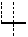 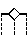 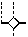 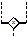
See also Section 3.2.1.4,
Example.
See Section 3.2.1.5, Mapping.
The sending of messages can be done either in parallel or as a decision between different communicative acts. Receiving different communicative acts usually results in different behaviour and different answers, that is, the behaviour of an AgentRole depends on the received message.
Adapted from [OMGuml], section 7.4.
Since the behaviour of an AgentRole depends on the incoming message and different communicative acts are allowed as an answer to a communicative act, the thread of interaction, that is, the processing of incoming messages, has to be split up into different threads of interaction. The lifeline of an AgentRole is split and the thread of interaction defines the reaction to received messages.
The thread of interaction shows the period during which an AgentRole is performing some task as a reaction to an incoming message. It represents only the duration of the action in time, but not the control relationship between the sender of the message and the receiver. A thread of interaction is always associated with the lifeline of an AgentRole.
Note we do not mean a physical thread in this context. The specification is independent of the implementation using threads or other mechanisms.
A thread of interaction is shown as a tall thin rectangle whose top is aligned with its initiation time and whose bottom is aligned with its completion time. It is drawn over the lifeline of an AgentRole. The task being performed may be labelled as text next to the thread of interaction or in the left margin, depending on the style; alternately the incoming message may indicate the task, in which case it may be omitted on the thread of interaction itself.
If the distinction between the reaction to different incoming communicative acts can be neglected, the entire lifeline may be shown as one thread of interaction.
· Variation
A thread of interaction may can take only a short period of time. To simplify diagrams, for compactification reasons of the diagram the parallelism and the decisions can be abbreviated by omitting the splitting/merging and putting the different threads of interaction one after another on the lifeline.
· Variation
A break of the rectangle describes a change in the thread of interaction.
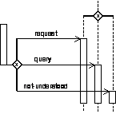 can be abbreviated as 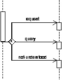
See Section 3.2.1.5, Mapping.
The main issue of protocols is the definition of communicative patterns, especially the sending of messages from one AgentRole to another. This sending can be done in different ways, for example, with different cardinalities, depending on some constraints or using AND/OR parallelism and decisions.
Adapted from [OMGuml], section 7.5 and section 8.9.
A message or sending of a communicative act is a communication from one AgentRole to another that conveys information with the expectation that the receiving AgentRole would react according to the semantics of the communicative act. The specification of the protocol says nothing about the implementation of the processing of the communicative act.
A message sending is shown as a horizontal solid arrow from a thread of interaction of an AgentRole to another thread of interaction of another AgentRole. In case of a message is sent from an AgentRole to itself (note that there might be many individual agents in an AgentRole), the arrow may start and end on the same lifeline or thread of interaction. Such a nested thread of interaction is denoted by a thread of interaction that is shifted a little bit to the right side in the actual thread of interaction.
Nested protocols are represented by a separate thread of interaction, along with an arrow initiating the nested protocol and one or more arrows terminating the nested protocol. The initiating arrow is drawn starting with a small solid filled circle, and a terminating arrow ends with a circle surrounding a small solid filled circle.
Each arrow is labelled with a message label that has the following syntax:
predecessor guard-condition sequence-expression communicative-act argument-list
Where:
· predecessor
This consists of at most one natural number followed by a slash (/) defining the sequencing of a parallel construct or the number of the input and output parameter in the context of Section 3.2.9, Threads of Interaction and Messages Inside and Outside Nested Protocols, xxxx. The clause is omitted if the list is empty.
· guard-condition
This is a usual UML guard condition, with the semantics, that the message is sent iff the guard is true. The guard conditions must be defined on the behavioural semantics of the agents, that is, the internal state of the agent must not be used in the definition of the guard.
· sequence-expression
This is a constraint, especially with n..m which denotes that the message is sent n up to m times with n Î N, m Î N È {*}[1]. The keyword broadcast denotes the broadcast sending of a message; the keyword deadline denotes a string that is encoded according to [ISO8601] and represents the deadline by which a message is useful.
· communicative-act
This is either the name, that is, a string representation with an underlined name, of a concrete communicative act instance, the name of a concrete communicative act instance and its associated communicative act, written as name:communicative-act or only the name of the communicative act, for example, inform.
· argument-list
This is a comma-separated list of arguments enclosed in parentheses. The parentheses can be omitted if the list is empty. Each argument is an expression in pseudo-code or an appropriate programming language or an OCL expression.
· Variation: Cardinality
The cardinality of a message (for example, n senders and m receivers of a message) is shown by writing natural numbers at the beginning and at the end of the arrow. This variation is only allowed if the sender and/or receiver is not an instance of an agent.
· Variation: Asynchronous Message Passing
An asynchronous message is drawn with a stick arrowhead (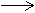). It shows the sending of the message without yielding control.
· Variation: Synchronous Message Passing
A synchronous message is drawn with a filled solid arrowhead (). It shows the yielding of the thread of control (wait semantics), that is, the AgentRole waits until an answer message is received and nothing else can be processed.
· Variation: Time intensive Message Passing
Normally message arrows are drawn horizontally. This indicates the duration required to send the message is atomic, that is, it is brief compared to the granularity of the interaction and that nothing else can take place during the message transmission. That is the correct assumption within many computers. If the messages requires some time to arrive for mobile communication, for example, during which something else can occur then the message arrow may be slanted downward so that the arrowhead is below the arrow tail ().
· Variation: Repetition
The repetition of parts of a PD is represented by an arrow or one of its variations usually marked by some guards or constraints ending at a thread of interaction which is according to the time axis before or after the actual time point. Note, that in this case the time ordering on the PDs is violated.
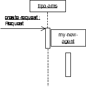
See Section 3.2.1.5, Mapping.
Besides the already presented kinds of messages, more complex messages can be used.
A complex message may be the parallel sending of messages or exclusively sending of exactly one message out of a set of different messages.
Three kinds of complex messages are distinguished. All three complex messages substitute an arrow from one thread of interaction to another thread of interaction by an arrow starting at one thread of interaction ending either:
· at a heavy bar (for AND parallelism),
· at a heavy bar with a non-filled diamond (for OR parallelism; inclusive-or), or,
· at a heavy bar with a non-filled diamond (for decisions; exclusive-or) with an "x" inside the diamond.
From these different kinds of heavy bars new arrows start in a right angle at the bar and end at possibly different threads of interaction, which are possibly combined in a parallel or decisional way.
The merging of different messages is done in the analogous way, that is, the parallel horizontal message arrows stop at one vertical bar and one message arrow is continued from the heavy bar.
None.
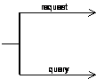 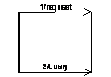 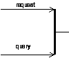
(a) (b)[2] (c)
See Section 3.2.1.5, Mapping.
Nested protocols are applied to specify complex systems in a modular way. Moreover the reuse of parts of a specification increases the readability of them.
A nested protocol can be defined and applied, if it is used several times within the same specification. In contrast to a parameterised protocol it is only an abbreviation for a fixed (part of a) protocol. Additionally nested protocols are used for the definition of repetition of a nested protocol according to guards and constraints.
Interleaved protocols show that between different agents a protocol is performed and more over in order to finish/proceed the protocol an agent has to perform another protocol with other agents.
If the nested protocol is marked with some guard then the semantics of the nested protocol is the semantics of the protocol under the assumption that the guard evaluates to true, otherwise the semantics is the semantics of an empty protocol, that is, nothing is specified.
If the nested protocol is marked with some constraints the nested protocol is repeated as long as the constraints evaluate to true.
A nested protocol is shown as a rectangle with rounded corners. It may have one or more compartments. The compartments are optional. They are as follows:
· Name compartment
This holds the (optional) name of the nested protocol as a string. Nested protocols without names are anonymous. It is undesirable to show the same named nested protocol twice in the same diagram except when they define the same nested protocol. The compartment is written in the upper left-hand corner of the rectangle.
· Guard compartment
This holds the (optional) guard of the nested protocol in the usual guard notation as [guard-condition]. Nested protocols without guards are equivalent with nested protocols with guard [true]. The guard compartment is written together with the constraint compartment in the lower left-hand corner of the rectangle.
· Constraint compartment
This holds the (optional) constraint of the nested protocol in the usual constraint notation as {constraint-condition}. Nested protocols without constraints are equivalent with nested protocols with constraint {1}. The constraint compartment is written together with the guard compartment in the lower left-hand corner of the rectangle. In addition to the constraint condition used in UML the constraint n..m denotes that the nested protocol is repeated n up to m times with n Î N, m Î N È {*}.
Another nested protocol can completely be drawn within the actual nested protocol denoting that the inner one is part of the outer one.
The abbreviations n and * can be applied to denote n..n and 0..*, respectively. Beyond the above usage of nested protocols for simple protocols, nested protocols can also be used applying parameterised protocols or instantiated parameterised protocols.
Another presentation option is the definition of interleaved protocols. For a nested protocol being part of another protocol the rectangle representing it has to be completely drawn within the other one. If interleaved protocols are defined, that is, during performing one IP another IP has to be processed, the rectangles are not drawn within each other.
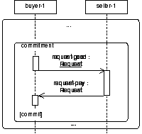 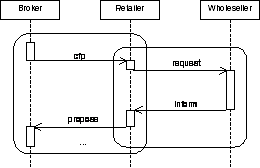
Nested Protocol Interleaved Protocols
Beyond the already presented nested and interleaved protocols, other kinds of complex nested protocols can also be defined.
A complex nested protocol defines the parallel or decisional combination of nested protocols. It has to take into consideration the thread of interaction at the beginning and at the end of the complex nested protocol. Furthermore the starting and ending point within the nested protocols have to be considered.
Three kinds of complex nested protocols are distinguished. All three complex nested protocols are drawn over the lifeline and threads of interaction within a PD. Each individual nested protocol in a complex nested protocol is introduced by a line that is terminated by the rectangle of a nested protocol. These lines are connected either by:
· a heavy bar defining AND parallelism,
· a heavy bar with a non-filled diamond defining OR parallelism (inclusive-or), or,
· a heavy bar with a non-filled diamond defining decisions (exclusive-or) with an "x" inside the diamond.
The threads of interaction which are continued in the different nested protocols are drawn as usual.
None.
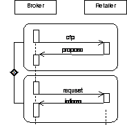
See Section 3.2.1.5, Mapping.
Usually, nested protocols have input and output parameters, namely threads of interaction and messages.
Nested protocols are defined in detail either within a PD where it is used or outside another PD. Threads of interaction and messages inside and outside nested protocols define the input and output parameter for nested protocols.
The input parameters are the threads of interaction, which are carried on in the nested protocol, and the messages which are received from other IPs.
The output parameters are on the one side the threads of interaction which are started within the nested protocol and are carried on outside the nested protocol and the messages which are sent from inside the nested protocol to AgentRoles not involved in the actual nested protocol. A message or thread of interaction ending at an input or starting at an output parameter of a nested protocol describes the connection of a whole PD with the embedded nested protocol.
The input and output parameters for the threads of interaction of a nested protocol are shown as a tall thin rectangle (like a thread of interaction) which is drawn beyond the bounds of over the top line and bottom line of the nested protocol rectangle, respectively.
The input and output message parameters are shown by arrows starting with a small solid filled circle, and arrows ending at a circle surrounding a small solid filled circle (a bull's eye), respectively.
The message arrows can be marked like usual messages. In this context, the predecessor denotes the number of the input/output parameter. The input/output thread of interaction can be marked with natural numbers to define the exact number of the parameter.
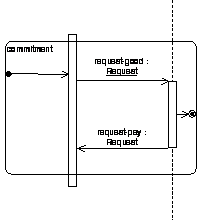
See Section 3.2.1.5, Mapping.
Adapted from [OMGuml], section 5.11.
A parameterised protocol is the description for an IP with one or more unbound formal parameters. It therefore defines a family of protocols, each protocol specified by binding the parameters to actual values. Typically the parameters represent agent roles, constraints, instances of communicative acts and nested protocols. The parameters used within the parameterised protocol are defined in terms of the formal parameters so they are become bound when the parameterised protocol itself is bound to the actual values.
A parameterised protocol is not a directly-usable protocol because it has unbound parameters. Its parameters must be bound to actual values to create a bound form that is a protocol.
A small dashed rectangle is superimposed on the upper right-hand corner of the rectangle with rounded corners as when defining a nested protocol. The dashed rectangle contains a parameter list of formal parameters for the protocol. The list must not be empty, although it might be suppressed in the presentation. The name of the parameterised protocol is written as a string in the upper left-hand corner.
The parameter list is a comma-separated list of arguments (formal parameters) defined by identifiers, like names for AgentRoles, constraint expressions, communicative acts or nested protocol names.
The input/output parameters like messages and threads of interactions can be used and defined as for nested protocols.
Communicative act can be marked with an asterisk in the parameter specification, denoting different kinds of messages that can alternatively be sent in this context.
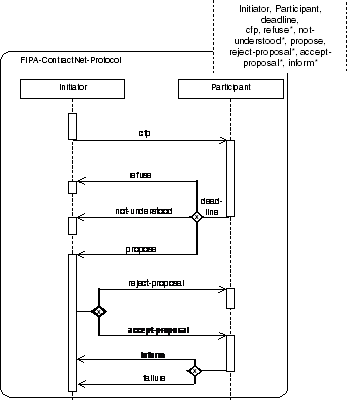
See Section 3.2.1.5, Mapping.
Note the difference between interleaved, nested and parameterised protocols. An interleaved protocol is used to show that during the execution of one protocol another one is started/performed. Nested protocols are used to show repetitions of sub-protocols, identifying fixed sub-protocols, reference to a fixed sub-protocol, like asking the DF for some information, or guarding a sub-protocol. Parameterised protocols are used to prepare patterns which can be instantiated in different contexts and applications, for example, the FIPA Contract Net Protocol for appointment scheduling and negotiation about some good which should be sold.
Adapted from [OMGuml], section 5.12.
A parameterised PD cannot be used directly in an ordinary interaction description, because it has free parameters that are not meaningful outside of a scope that declares the parameter. To be used, a formal parameter of a parameterised protocol must be bound to actual values. The actual value for each parameter is an expression defined within the scope of use. If the referencing scope is itself a parameterised protocol, then the parameters of the referencing parameterised protocol can be used as actual values in binding the referenced parameterised protocol, but the parameter names in the two templates cannot be assumed to correspond, because they have no scope outside of their respective templates. We can assume without loss of generality that the parameter names of the different parameterised protocols are different.
A bound element is indicated in the name string of an element, as follows:
parameterised-protocol-name < role-list, constraint-expression-list, value-list >
Where:
· parameterised-protocol-name
This is identical to the name of the parameterised protocol.
· role-list
This is a comma-delimited list of role labels. constraint-expression-list is a comma-delimited list of constraint terms.
· value-list
This is a comma-delimited non-empty list of pairs, separated by a colon consisting of a value expression and a communicative act. The communicative act is optional.
The number and types of the values must match the number and types of the parameterised protocol formal parameters for the parameterised protocol of the given name. The bound element name may be used anywhere that protocol of the parameterised kind could be used.
None.
FIPA-ContractNet-Protocol
<
Buyer, Seller
20000807
cfp-seller : cfp,
refuse-1 : refuse,
refuse-2 : refuse, not-understood, propose, reject-proposal, accept-proposal,
cancel, inform, failure
>
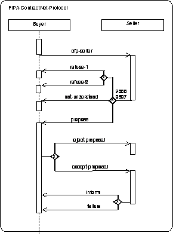
The use of the bound element syntax for the name of a symbol maps into a Binding dependency between the dependent ModelElement corresponding to the bound element symbol and the provider ModelElement whose name matches the name part of the bound element without the arguments. If the name does not match a parameterised protocol or if the number of arguments in the bound element does not match the number of formal parameters in the parameterised protocol, then the model is ill-formed. Each argument in the bound element maps into a ModelElement bearing a templateArgument association to the Namespace of the bound element. The Binding relationship bears the list of actual argument values.
[Booch94] Booch, G., Object-Oriented Analysis and Design with Applications. Benjamin/Cummings, 1994.
[Booch95] Booch, G., Object Solutions: Managing the Object-Oriented Project. Addison-Wesley, 1995.
[FIPA00007] FIPA Content Language Library Specification. Foundation for Intelligent Physical Agents, 2000. http://www.fipa.org/specs/fipa00007/
[FIPA00023] FIPA Agent Management Specification. Foundation for Intelligent Physical Agents, 2000. http://www.fipa.org/specs/fipa00023/
[ISO8601] Date Elements and Interchange Formats, Information Interchange – Representation of Dates and Times, ISO 8601:1988(E), 1988.
[Odell2000] Odell, J., Parunak, H. van Dyke and Bauer, B., Extending UML for Agents. In: AOIS Worshop at AAAI, 2000.
[OMGuml] OMG Unified Modelling
Language Version 1.1, Object Management Group, 1999.
http://www.omg.org/uml/
[Rumbaugh91] Rumbaugh, J., Blaha, M., Premerlani, W., Eddy, F. and Lorenzen, W., Object-Oriented Modeling and Design. Prentice Hall, 1991.
Entire document : Deprecated